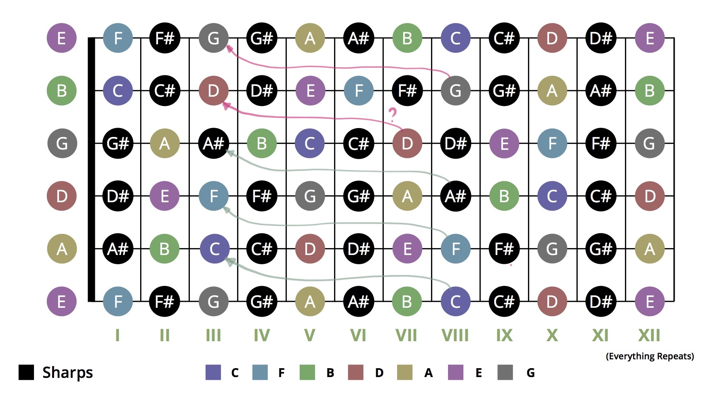

吉他的正确调音方式
吉他是比钢琴的音符排布更科学的乐器，因为它的 12 个音是均匀分布的，每个间隔都是一个“半音”（semitone）。但是昨天通过乐理研究发现，传统的吉他调音方式居然是错误的。
前 4 根弦是对的，因为每一根弦上面的音都是下面那根弦左移 5 个半音（Perfect 4th）。可是到了第 5 根弦（B）就错了，它只左移了 4 个半音（Major 3rd）。所以第 5 根弦和接下来的第 6 根，音符的相对位置跟其它 4 根弦不一样了。（见图一）

因为这个原因，一旦弹和弦遇到最后两根弦，手势就需要变，而其它 4 根弦没有这个问题，同一个手势可以移到任何位置弹奏一样的和弦。很多人只是死记硬背和弦，所以没有发现这个问题。
其实解决方案很简单。因为第 5 根弦开始排列出错，所以只需要把第 5 根弦调高一个半音，让它变成 C，第 6 根弦跟着调高一个半音，变成 F，问题就解决了。六根弦的音分别是 E-A-D-G-C-F，而不是传统的 E-A-D-G-B-E。（见图二）

实际上，已经有一些聪明的吉他手发现了这个做法，他们把这个调音方式叫做「all fourths tuning」，意思是每一根弦与下一根的差距是 Perfect 4th（5 个 semitone），没有例外。你可以在这个查到这个做法：https://en.wikipedia.org/wiki/All_fourths_tuning。
还可以参考这些视频，讲解这个做法的好处：
https://youtu.be/HOvSGj9F3f0
https://youtu.be/VQ5RXY3tPVM
目前使用这个调音方式的人好像还不多，因为一旦用了它，普通的（错误的）吉他谱都需要被理解转化之后才能弹了，所以一般只有真正理解乐理的吉他手，而不是死记硬背的人才会使用这个调音方式。一旦从这个方式开始，恐怕就再也回不去了，因为它比之前那种有 bug 的方式简单太多了。
也有人为传统的调音方式辩护，可是看了实际使用 all fourths tuning 的吉他手们的讲解和出色表现，发现那些理由都是站不住脚的。一致性和简单性，对于任何事情都是很重要的，一旦有一点点差错，就会引起非常大的麻烦。我有点惊讶，这么多人弹吉他，200 多年了，到现在才有少数人发现这个荒谬的问题。
我强烈建议大家使用 all fourths tuning，因为很明显这才是正确的方式。这个简单的调整会让吉他变成优美很多的乐器，也会让你成为比以前好很多的吉他手。